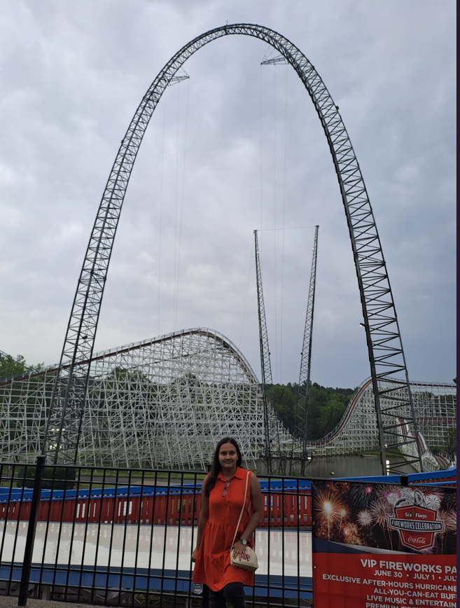
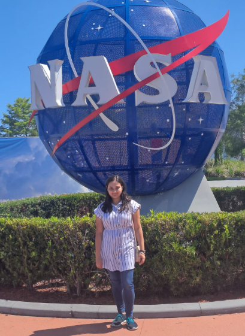

Isha Mukherjee - Gulfstream
It was the winter break of 2022. It was a mundane yet relaxing evening at home, one of the very rare days when you have nothing much to do. Being already selected as a research intern at various reputed universities including the Sorbonne University, Paris and the University of Alberta, Canada (through Mitacs), I had nothing much to worry about.
I was just scrolling through Instagram reels when suddenly the Aerospace Internship WhatsApp Group started getting bombarded with copious messages. To everyone’s surprise, The Gulfstream Aerospace Corporation, one of the premier leaders in the world of aviation, had opened their IAF, exclusively for Aerospace Thirdies, for the first time after Covid. All praise for Amay, our adroit IC Sahab!!!
Coveting for Univ Intern for more than a year, I was a bit skeptical if I should apply for this one. But my mom persuaded me to apply for this one for two reasons. One, it was THE USA!!! Second, it paid much much more. Reluctantly, I signed the IAF.
A few weeks later, the interview shortlist showed up on the InstiApp. To our delight, both me and my best friend were shortlisted along with six other candidates. Interviews were to follow the very next week.Thus began our saga of intense preparation. From reading a dozen of articles on the web about how the company mushroomed,culminated and innovated to pestering seniors as well as previous interns with doubts and interview tips and reviewing the projects on the resume, we had to give it our best shot.
Fast Forward to the interview day…
My interview was the second last, at 10 pm. I felt it was a bit downside for me but never mind. A bit unnerved and becoming haywired, I tried my best to speak rationally and logically. The interview began with just two panelists. Initially, their fast paced English of American Accent seemed onerous, but I adapted to it briskly. The questions were rather inclined towards HR Round rather than anything much technical. I was asked about my teamwork and leadership skills which I had, thanks to Aeromodelling Club for giving me the opportunity to be a convenor. There were also questions related to my previous internships, projects, and challenges I faced and how I tackled those. Things I felt they judged were confidence and passion. Ostensibly, I had both.
Followed by a week’s wait, I got a mail. Yes! It was an acceptance letter!! I cracked it! The success was bittersweet as my best friend did not get his acceptance yet. Followed by another fortnight’s wait and another round of interview, he also got his acceptance letter!!
It was going to be a blast, we expected. We were travelling to the United States of America!!! There was a long Visa process, but it was cut short because of the high repute of Gulfstream! Sad news- it took us 2 months to get Visa Interview appointment, Happy News is we got the Visa within a week of the interview.
Fast forward to the Day of Departure. It was post midnight of the 11th May 2023. Boarded a flight for Paris, then to Atlanta and then to Savannah!! It took us 26 hours.
Finally reached our beautiful company accommodation. A lavish apartment surrounded by lush greenery! Savannah is a very tranquil city, no pollution, no noise! It is on the outskirts of the downtown. The cute little geese wadding around are a sight to behold in Savannah.
It took us about 2-3 days to overcome the Jet Lag.
Then came our orientation day. We were among the 200 interns who joined but the only international ones. It was an auspicious beginning with the Gulfstream Badge allotted to each of us. With great enthusiasm and support from my manager, I started my role as Aerodynamics Performance Engineer. The performance group under Flight Sciences was under high work load as this was the time when certification of a brand new aircraft, G700 was going on at full pace. As an intern, I contributed to two major projects.
First involved unit testing of each part of the program which involved calculation of Pitch Targets and Take-off Distance on Runway. It involved expertise in MATLAB which I acquired in the first two weeks of training. The project was a major step towards certification as the program needs to produce reliable results which are worthy of being published in the Aircraft Flight Manual. I was honoured to do this project as this was something even full-timers were working on.
Second project involved development of a MATLAB Algorithm using complex architecture to generate take-off noise profiles for accurate estimation of thrust cut-back point. It was a more involved project requiring a lot of cerebral work. I would not bore you guys with the technical details of it.
Coming to the fun part, there were a lot of industrial tours for the new recruits and interns, one almost each week. Touring the Production line and watching an aircraft getting built from scratch was an intriguing and marvellous experience. Each bolt is tightened with utmost care and each joint is welded in a meticulous manner to ensure the highest level of safety. The completions department took care of delivering finished and personalised luxury private jets to the richest of the rich, so their wooden shop, paint shop and fabrics shop were a marvel to behold. I got a chance to touch and feel the newest of the fleet, G800 and be on one of the G650s. We toured the Flight Test Building where we got an exposure of the sensors and how data is processed from these. The service centre tour was a really cool one where I got an idea of the composites and how material are tested. My desk was close to the Integrated Test Facility where I got to see the Iron Birds whenever I walked past them towards the cafe. The best experience of all, I got to play around with a real Gulfstream Flight Simulator (and even crash i nose-down xD) .
Overall, the experience with the company was a wholesome one.
Although each day was 10 hour long, a week was just 4 day long. These two months have been an epitome of work-life balance. While my work as well as final presentation received extensive praise from managers and teammates, I got to travel around the East Coast of USA. Visiting the Kennedy Space Centre in Florida was a dream come true. Riding the Goliath Roller Coaster at the Six Flags over Georgia was definitely a once-in- a lifetime experience. Watching the sea lion and dolphin show at America’s largest aquarium was a unique chance. The Fireworks over the Centennial Park for the 4th of July celebration reminded that USA is great. The other places I visited were the Universal Studios and the Icon Park in Florida, the Coca-Cola World in Atlanta and the Tybee Island, Forsyth Park and The Fort Pulaski in Savannah Downtown. There were also fun events organized by Gulfstream for interns like the Movie Night at the World’s Tallest IMAX, Trolley Tour and Savannah Bananas Game.
This Summer of 2023 will be etched in my heart forever. All the best to our successors!!
Feel free to reach out for any questions!
 